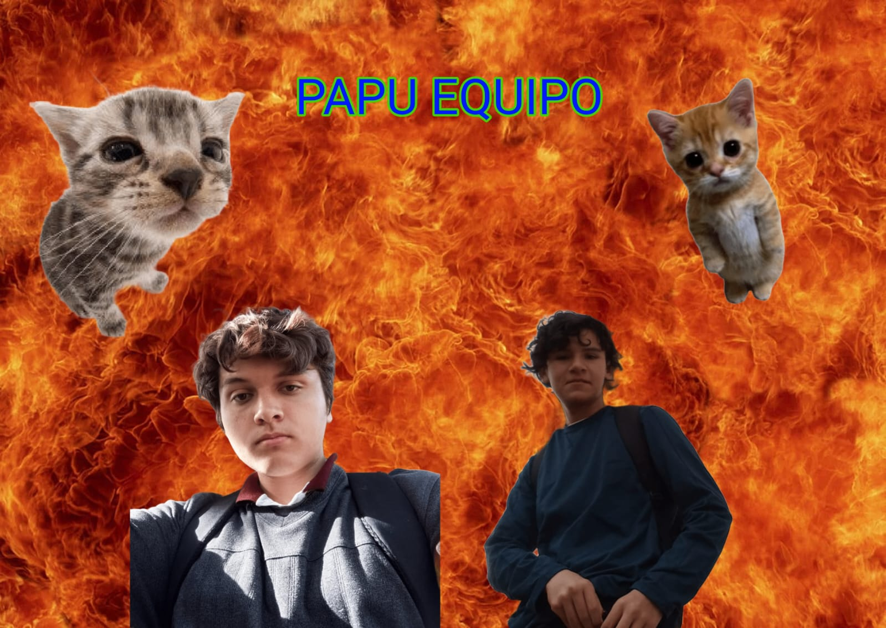

Creadores de esta pagina Web
Inicio
Comida
Gente y Traje Tipico
Costumbres
Lugares Turisticos
- ¿Quienes Somos? -
 El chico de la izquierda es Carlos Alfredo y el de la derecha es Abel Saul, somos de 4A Programacion y creamos esta pagina web sobre chiapas para luego poder usarla en una practica.